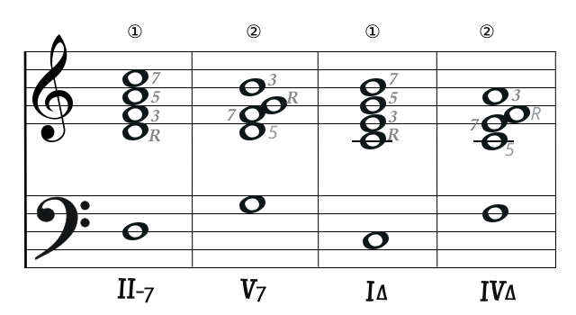
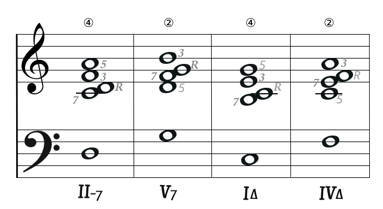

当乐谱上给出一个和弦代号时，将其在乐器上具体以怎样的垂直结构铺展演奏，称为“和弦排列/配置（Voicing）”；而处理和弦与和弦之间横向声部平滑过渡的技艺，则被称为“声部连接/声部进行（Voice Leading）”。对于以实战演奏为主眼的爵士理论而言，关于排列的信息极其丰满详实，甚至单单针对“钢琴和弦排列”、“吉他和弦排列”这类具体乐器课题，都能洋洋洒洒独立成书。 在常规和弦理论中，为了使信息轻量模块化，通常会特意省去具体的排列形态；然而一旦认真探讨其实操范式，篇幅往往极其庞大。毕竟这已经深入到了具体“编曲法”的精微实操领域，信息量浩瀚也在情理之中。在本文中，我们主要以钢琴和弦排列为对象，引介其中最为核心的基石内容。
排列形态与乐队编制
首先必须明确的一个大前提是：和弦排列的具体呈现形态，会随着乐队乐器编制的不同而发生翻天覆地的剧烈重构。如果是在钢琴独奏（Piano Solo）中，左手必须负责按死根音；但如果是与贝斯手协同合奏的常规乐队，钢琴手弹奏根音的必要性便会断崖式下降。不仅如此，即便同在合奏中，究竟是右手弹Solo、左手单手交代和声，还是另有其他独奏乐手、钢琴双手全开铺展丰满和声——其排列结构也截然不同（这同样是和弦排列专著往往厚如砖石的原因所在）。 在本文中，我们首先设定最为基础的标准场景展开讨论：左手负责低音贝斯线，右手负责和弦铺陈。如此一来，左手原则上锁死根音，讨论的逻辑框架就会变得清晰简洁得多。
 1. 向导音与两类基本形态
1. 向导音与两类基本形态
在爵士和弦排列中，首先应当放在第一顺位去意识的，无疑是向导音（Guide Tones）——即3rd与7th的骨干音。通过旋律篇的“壳理论（ Theory）”，大家想必已经深刻领会了这两个音对于塑造音乐色彩与情感特质的战略重要性。 加之现代爵士的基石进行 ii-V-I 中，各个和弦的品质各不相同。明确呈现出各个和弦的品质，其意义犹如雷达扫描，是在向听众与乐手昭示当前正处于 ii-V-I 循环周期的哪一个关键坐标节点。

如果仅考虑弹奏3rd与7th这两个向导音，在垂直排列上自然只有两种排列可能：要么3rd在下，要么7th在下。

偶尔即便改用sus4或6和弦，常规情况下大体上都是按住这两个向导音。因此，将这两种基本形态视为一切和弦排列的原型基石，后续关于排列的分类就会变得一目了然。在此为了行文便利，我们将3rd在下的形态称为“3-7型”，将7th在下的形态称为“7-3型”。
2. 和弦连接与形态转换
在推进和弦进行的过程中，洞察这些向导音在空间上呈现怎样的位置位移至关重要。这在很大程度上取决于和弦连接的根音度数跨度，让我们按度数分别观察。
五度连接
在以 ii-V-I 为代表的五度连接中，交替循环使用 3-7型 与 7-3型，能够使向导音之间以极其平滑的级进（顺次进行）完美咬合。

具体的位移细节虽然会随和弦品质产生微妙微调，但始终收敛在级进范围之内这一点是一以贯之的。尤其在 ii-V-I 进行中（-7 → 7 → Δ），由于前后和弦之间都存在共同音的保留，连接显得如丝般顺滑。而在像扩展属和弦那样连续出现属七和弦串联时，两个向导音则会同时以下行的方式优雅衔接：

进行动力最强悍的五度下行，恰恰能让向导音在内部镜像翻转的同时实现最和谐的平滑过渡——这一声学事实本身就蕴含着极具对称美的几何趣味。 当然，为了制造引人注目的戏剧效果，偶尔也可以刻意制造声部大跳；但在初学阶段，首先将这种能量消耗最低的“极简手部微动”固化为肌肉本能，是不可动摇的基本功。
二度连接
二度连接属于向相邻音级的位移，因此自然而然无需形态反转，直接保持同一类型平移级进连接。

三度连接
在三度连接的情况下，既可以像二度那样直接平移、让相同类型保持连续；而若选择反转类型，声部连接在平滑度上往往更胜一筹。

在此种情况下，最高音声部与低音贝斯声部形成了反向进行（反行）关系，声部运动更加充满戏剧张力，这是其不可忽视的关键特征。 这种各个音符之间的横向有机勾连，正是所谓的“声部连接（Voice Leading）”。审视和弦与和弦的咬合缝隙，不禁让人联想到旋律篇中的“连接系理论”。确实，不孤立看待单个和弦、而是紧盯和弦间的动态纽带，其核心哲学是完全相通的。在掌握单个和弦按法的基础上，进一步将“从 II-7 走向 V7 时只需顺势将7音往下一抹”这类声部连接微动固化为潜意识直觉，是达成流畅即兴伴奏的必由之路。
3. 4～5音的高阶排列
那么，以 3-7 与 7-3 为骨架原型，进一步增加音数时会是怎样一番景象呢？如果右手负责按下 1、3、5、7 全套和弦音，理论上可以衍生出如下4种基本排列形态：

通过辗转转位，共有4种模式。①与②是在向导音下方填充其他和弦音，而③与④则是在向导音上方堆叠其他音。像这样将4个声部全部收拢在一个八度之内的紧凑排布，被称为密集四部排列（4 Way Close）。单独指称时，通常以其音程度数从底向上的顺序直接表记为“1-3-5-7”、“5-7-1-3”等。 虽然①至④的顺序看起来有些犬牙交错，但其背后的分类逻辑极其明确：①②是向导音位居最高音（Top Note）的排列，而③④则是向导音居于内声部的排列。相对而言，由于①②具有更加开阔丰满的共鸣声学表现，在多数应用场景下更为讨喜。尤其在大七和弦中，由于根音（Rt）直接压在7th上方半音处，③的形态在使用场景上往往需要格外审慎。
排列形态与运指生理学
从运指生理学的视角来看，①与②构成了完美的孪生搭档关系：在钢琴上正常弹奏时，向导音都极其默契地落在小指与食指之上。而在进行五度下行强进行时，为了以最小的手部动作位移完成连接，需要交替切换3-7型与7-3型；因此只要交替运用①与②，小指与食指就能始终恒定掌控着向导音的航向！


因此，对于初学者而言，若想在牢牢掌控向导音骨架的同时流畅弹奏和弦谱伴奏，熟稔掌握这组①②搭档是最直截了当的捷径。另外，当以5th为最高音的④形态进行五度下行时，向上微调即可顺滑过渡至②形态：


透彻理解密集四部排列的这4种形态及其相互连接，是驾驭后续一切高阶现代和弦排列的基石底座。
置换为引伸音（Tension Substitution）
至此，我们已经掌握了按压 1-3-5-7 基础和弦音的指法形态；但毫无疑问，爵士乐最摄人心魄的精髓始终在于引伸音（Tension）。在保持总音数不再膨胀膨胀的前提下，我们需要将这4个音中的某一个音微调挪位，替换为 9th、11th、13th 系统的引伸音。其中最经典也最核心的常规操作，莫过于将与低音贝斯声部完全重复的根音（Rt）替换为 9th。

加入9th之后，声音的华丽绚烂感立刻跨上了一个全新的台阶！尤其是此前因根音坐镇最高音而略显尴尬的③，摇身一变成了经典纯正的三度叠置九和弦原型，瞬间成了战力爆表的王牌形态。而④原本由于7th与Rt相邻略显拥挤别扭的手部手感，在替换为9th之后间距拉开得恰到好处，转变成了一个极其舒适好弹的指法形态。 在实战演奏中，与其将宝贵的手指浪费在与贝斯重复的根音上，不如用于弹奏华丽的9th引伸音，这种场景比比皆是。正因如此，在许多权威爵士理论书中，往往直接将这组③与④作为最基础的标准排列，分别命名为“Position I / Position II”或“Type A / Type B”[1]。
从九和弦进一步演化替换
在替换掉根音之后，下一步可以考虑的，是将声音重要性最低的纯五音（5th）向上或向下微调，替换为 11th 或 13th 系列的音；或者将 7th 替换为 6th。让我们以③的九和弦形态为母体进行变体改造：

此外，通过主动抽离某些音符，还可以将其改造为混合和弦（Hybrid Chords），或是转化为四度叠置和弦（Quartal Harmony）：

尤其在遇到属和弦（Dominant Chord）时，由于可用引伸音的选择极为庞杂，排列形态的数量更是多如繁星。其中当激活变化属和弦（Altered Dominant）时，由于必须将5th上下变异，因此用 -13th（♭13th）或 -5th（♭5th）替代5th的排列形态便会极其高频地登场：

虽然表面看起来眼花缭乱，但既然向导音必定要死守按住，乐手在实战中真正需要聚精会神聚焦的，其实只有剩下的那两个活动音而已。 以向导音为核心轴心、在其周边点缀附着音符——带着这种视角去审视，对于纷繁复杂的排列模式，思路是不是立刻变得井然有序了呢？
多种不同的方法论视角
上面我们是以对九和弦进行位移为路径展开推导的，但显然理论范式绝非只有这一种。例如在另一些教材中，引介了“在向导音上方直接叠置最近的引伸音；若该音沦为避用音导致声部不适，则改用5th或根音顶替”的替代方法论[2]：

若想快速构建包含引伸音的四声部排列，这种思路同样非常直观明了。但不论哪种流派，始终以向导音为立足原点这一点是完全恒定一致的。
左手兼按七音
此外，在此前讨论中左手始终扮演纯粹的贝斯手角色单弹根音，但左手在按根音的同时连带按下7th音的形态同样极其强大且常用：

由于在音域跨度上拉得极开，整体音响极其宏大豪华；更关键的是右手由此卸下了弹奏7音的重担，可调度的自由度大幅飞跃。顺着这种左手承担音数不断扩展的思路深挖下去，最终自然而然便会迈入我们在第V章讲过的上层结构三和弦（Upper Structure Triad，UST）等多重复合和弦的殿堂。
4. 为旋律配置和声（Harmonizing Melodies）
截至目前我们探讨的还只是单纯伴奏维度的和弦演奏，但在爵士乐中还有一项极为核心的工程——针对既有的固定主旋律，为其披挂和弦外衣，即“和声配置（Harmonize）”。在旋律篇第V章中我们曾巨细靡遗地剖析过和声配置；但本次语境略有不同，是在主旋律与和弦进行均已双双锁死的大前提下，去探讨具体的纵向音符排布。

本次我们以《怀抱着对繁星的许愿所写就的原创曲》为蓝本，审视几种最为经典的实战配置手法。
常规标准配置
首先，如果不施加任何特殊技巧，仅做最朴素的基础和声配置，可以呈现为如下形态：

此例中我们仅在强拍位置赋予和弦。在为旋律配置和声时，第一道必须警惕的关隘，就是是否在旋律音的正下方紧贴处塞入音符。例如在 D7 处，旋律音正下方半音处虽然有作为5th的 A 音，但若将其弹响，主旋律将被严重浑浊污染。考虑到5th原本的重要性极低、且旋律线条随后紧接着就会主动踩上该 A 音，在此将其果断省略显然是明智得多的上策。 又如紧随其后的 G–Δ 处，追加作为13th的 E 音同样成立。由于它与最高音相距，浑浊感较为温和，在实际创作中作为备选项完全可行。故意让旋律产生某种粗粝浑浊固然是一种风格化手段，但在原则上，确保主旋律纯粹清晰地被听众捕获始终是最高纲领。
降二音配置（Drop 2）
如果此时我们打破“左手始终死守贝斯单音”的前提，改由双手协同联动为主旋律配置和声，全新的天地将轰然铺展。其中最具统治力、名垂青史的招牌技法，莫过于将从最高音数起的第2个音（即最高音正下方的那个音）向下翻转八度交由左手弹奏的——Drop 2（降二音排列 / 降二音开放配置）。

例如在开头的 FΔ 中，最高音是5th，其正下方的3rd被向下翻转八度由左手演奏；在接下来的 D7 中，最高音是 -13th，将其本身视为5th的变异，那么其下方的3rd同样被向下翻转八度。“向下翻转”听起来像某种复杂的魔术，但其声学本质在于：彻底规避左右手音符的重叠拥挤，使音响的垂直分布达到极佳的声学平衡。 与密集四部（4 Way Close）相比，由于横跨音域宽广开阔，整体声响显得格外晶莹剔透、辉煌璀璨。不仅如此，把自顶向下的“第2个音”移走具有极其强大的声学红利：首先能够自然规避与旋律下方二度音发生打架碰撞的惨剧；即便没有音程冲突，挪开旋律下方的贴身音符也能制造出宝贵的呼吸空隙，使主旋律能够鹤立鸡群、清晰无阻地被听觉捕获。不仅如此，（在钢琴声部内部）最高音与最低音的跨度在极高概率下构成了丰满的“3度壳（3rd Shell）”关系，单凭钢琴自身听起来就极其醇厚高贵。
顺便提一句，本例中在 D7 与 G–Δ 处，钢琴完全放弃了弹奏根音，全盘交由贝斯手负责。这种完全不弹根音的排列形态被称为无根音排列（Rootless Voicing），在有贝斯手在场的乐队合奏中是极其普遍的日常选择。甚至在钢琴独奏中，大师们也会刻意采用无根音排列来模糊和弦的功能感与进行指向，作为营造前卫朦胧感的绝门招式。 （除Drop 2之外，同理将自上而下第2与第4音翻转八度的“Drop 2 & 4”、将第3音翻转八度的“Drop 3”同样是业界经典标配，在此不一一赘述。）
块状和弦（Block Chords）
另一套享誉业界的经典技法，是左手在低八度处与主旋律精准同度齐奏（Octave Unison），同时右手各指在内侧声部严密填补和弦音。

其音域虽比 Drop 2 狭窄、声部密度极高，但正因为主旋律被八度齐奏牢牢焊死加粗，整个旋律线条听起来具有无可匹敌的穿透力与极其分明的轮廓感。由于这套手法让旋律听起来犹如一整块厚重结实的砖石，故被命名为块状和弦（Block Chords / 密集和弦）。 由于其声音压迫感相当强悍，在本例中若整体移高八度在高音区弹奏，听觉上将更为契合融洽：
原本若旋律音区过高容易显得单薄微弱难以听清，低八度的齐奏恰如其分地弥补了声响厚度的短板。 内声部的填充手法各有千秋，其中最著名的莫过于以大师之名命名的“乔治·希尔林风格（George Shearing Style）”，该方法论通过系统化交替运用6和弦与减七和弦来建立高度精密的配置。一代代演奏大师提炼出的绝活技艺就这样被沉淀为可传承的学术资产，滋养着无数后人。
5. 趋近音（Approach Notes）的活用
若渴望让和声更加张扬肆意狂放、却又绝不希望摧毁主旋律原本的艺术魅力，*趋近音（Approach Notes）*的思维便成了破局的关键。这是在旋律篇第II章首次亮相的概念，指的是以级进方式奔向目标和弦音的音符。

尤其在进入第VI章后，我们几乎把各种音都作为引伸音毫无保留地砸进和弦之中；但适时回归旋律篇中奠定的奇数度与偶数度的根本角色，往往会带来意想不到的通透顿悟。在趋近音中由“偶数度（紧张）→ 奇数度（松弛）”的流动，本质上是发生在极度微观时间颗粒度上的“张力爆发 → 释放解决”事件。 既然主旋律在此瞬间正在全力制造“紧张”，那么在此瞬间哪怕伴奏和声做出极其出格过激的剧烈动作，在宏观听觉上也完全能够顺畅收拢……！建立在这一深刻声学逻辑之上，诞生了数种威力强大的和声配置绝技。 在前面的范例中，D7 处的 B♭ → A 运动恰好构成了趋近音向目标音的解决，让我们尝试在此处将和声激进化：
自然音阶趋近（Diatonic Approach）
首先，由于 B♭ → A 是从上方顺流扑下的趋近动作，一种构想是将为其配置的整个伴奏和声在自然音阶上顺势抬高一个音级。换言之，在此处配置相当于 VIIø 的 Eø：

若孤立从 D7 的视角来看，G音的闯入无疑严重阻碍了属功能的发挥；但正因为全员都心知肚明这一紧张在下一瞬迈向目标音时会被彻底释放，它在客观上起到了犹如 sus4 般的强大悬疑张力。由于是在调内自然音阶的范畴内进行音级位移，该技法被称为自然音阶趋近（Diatonic Approach）。 值得一提的是，所调用的和弦未必局限于相邻音级；某些理论文献甚至指出：“若目标和弦具备主功能（T），则应以具备下属功能（S）的和弦进行趋近；反之若目标具备下属功能，则应以主功能和弦进行趋近”[3]。 像这样在原本纯粹写着“D7”的单和小节内，肆意横插进完全不同性质的和弦进行微观对冲——此类在外人看来犹如脱缰野马的狂放技法，在爵士乐中早已是信手拈来的家常便饭。
减和弦趋近（Diminished Approach）
接下来，减七和弦堪称是承载极端“紧张”张力的绝对代表。正如“经过减和弦”所昭示的，减七和弦最具标志性的解决流向正是向上半音解决。因此，针对目标和弦，从下方半音硬砸入一个减七和弦同样是极具杀伤力的绝技。 针对此处的 D7，下方半音正是 C♯o；恰好此时主旋律的音正是其构成音之一的 B♭，因此整个操作水到渠成、天衣无缝：

相对于根音D而言，C♯是大七度音，其突兀的离异感构成了绝妙的惊艳点缀。尤为精妙的是，在此处减七和弦的所有构成音全部以平滑的半音运动整齐划一地滑入后续的 D7(-9)，声部衔接无懈可击。该技法被称为减和弦趋近（Diminished Approach）。
属和弦趋近（Dominant Approach）
顺着相似的思路，以针对目标和弦自身的属和弦来进行和声配置同样是一大强力路径。针对 D7，其上方五度的属和弦正是 A7。在当前情境下若完全平铺直叙弹奏 A7（由于会涌现出 C♯、E、G），其声音与减和弦趋近大同小异；但若将属和弦独有的引伸音纳入视野，全新的维度轰然洞开：

我们在此引入了属于 A7 的 -13th（♭13th）即还原F音（F♮）。明明底层和弦是 D7，起手却悍然踩响还原F——单凭刻板乐理往往是极难构想出这种神来之笔的。对于当前这首闲适慵懒的曲风而言或许略显锋芒毕露，但这恰恰昭示了该技法所能注入的剧烈戏剧“剧毒”。该技法被称为属和弦趋近（Dominant Approach）[4]。
半音阶趋近（Chromatic Approach）
尤其在主旋律呈半音级进位移时，将整个和弦配置的所有声部原封不动平行半音平移是极度震撼的视觉与听觉技法。在随后的 G–Δ 处我们予以施展：

像 C♯ 这样看似离经叛道的奇异怪音，被无比自然地裹挟融入了声部洪流之中。这被称为半音阶趋近（Chromatic Approach）。所有声部凭借一句“反正下一瞬间大家都半音解决归位了，有何不可？”的终极声学逻辑，瞬间获得了完全的合法性。 更广泛地，所有声部保持相同音程度数进行机械平行移动的趋近手法，在广义上被统称为平行趋近（Parallel Approach）。 针对某一个特定旋律音究竟能动用哪种趋近手法，完全取决于其旋律音程的动态关系。半音阶趋近必须以旋律半音运动为前置条件，而减和弦趋近则要求旋律必须是减七和弦的合法骨架音。这一领域同样需要大家在脑海中建立大量高阶范式的归档沉淀。
6. 经典实战录音赏析
最后，让我们通过几段名垂青史的真实大师唱片实录，亲身领略上述理论在指尖绽放的无穷魅力。
Drop 2 排列实战
比尔·埃文斯演绎的《I Love You》。开篇在 F♯13sus4 与 A13sus4 上的所有即兴乐句线条，自始至终严丝合缝地贯穿着纯正的 Drop 2 排列。辽阔深远的音域跨度、傲然挺立的主旋律轮廓、最高音与最低音频繁呈现的纯美3度关系——所有理论红利在此得到了完美验证。 面对如此风驰电掣的高速跑动，其双手之间却能时刻严密咬合着同一种精密高雅的排列架构，这雄辩地证明了爵士大师们绝非仅凭浮躁灵感随性胡弹，而是巍然屹立在历代先贤千锤百炼铸就的深厚理论积淀之上。
减和弦趋近实战
同样来自比尔·埃文斯的传世杰作《We Will Meet Again》。开篇第一声便以极其冷峻的 A-D-G 四度叠置惊艳起步；随后的上行乐句则通篇展开纯正的 Drop 2 排列。 其和声配置的精髓令人叹为观止：面对底层 Cm 和弦，主旋律顺次以 C-D-E♭-F-G 向上攀爬；在踩上属于 Cm 和弦音的 C、E♭、G 节点上，大师巧妙穿插9度引伸音构筑核心和声；而在落入偶数级数的 D 与 F 瞬间，全声部悍然以减七和弦实施精准轰击！教科书级的减和弦趋近在此得到了绝美的艺术呈现。
块状和弦实战
奥斯卡·彼得森（Oscar Peterson）倾情演绎的《Satin Doll》。一上来便能清晰听到利用八度齐奏对主旋律实施的强力加粗加固。 行进至第17小节，左手与右手展开八度齐奏的纯正**块状和弦（Block Chords）**华丽登场。若细品其内声部填充，在第17小节后半部分赫然填入了 Go 和弦，这同样正是减和弦趋近的精妙施展。在此后的行进中，此类华彩块状和弦屡见不鲜。
四度叠置与平行平移实战
麦考伊·泰纳（McCoy Tyner）名震天下的《Inception》。在此曲极其前卫狂暴的和弦进行中，第5小节堪称神来之笔：从 F-B-E 这一四度叠置排列起跑，整个双手结构如同一台精密的重装机械，原封不动半音步步滑降，碾过 G7 → C7 → F7。这属于独立于趋近音之外、业界尊称为**平行和声（Parallel Harmony）**的终极平行平移技艺。 尤为耐人寻味的是，我们在前一节阐述过的“属七五度下行链中向导音呈半音下行连接”的声学隐秘，在此被大师发挥到了极致：表面看似是一组调性极度稀薄的前卫四度叠置在机械滑行，实则在每一个节点上都毫厘不差地牢牢压住了属七和弦的核心向导音！在第189小节之后数度爆发的“四度叠置＋全音平行平移”更是气吞山河，令人叹为观止。
正如大家所亲身感受到的，唯有扎根于真实唱片的显微剖析，抽象的理论才能化作有温度的血肉触感，仅是一首经典名曲的精读就能带来无尽的顿悟灵光。正如开篇所强调的，和弦排列论旨在剖析具体的演奏实战范式，其底层逻辑与将音乐高度抽象建模的通用和弦理论截然不同。要在排列领域真正登堂入室，唯有广泛涉猎海量经典实战一途。所幸在数字化时代，网络上涌现出海量将大师演奏精准扒谱可视化的宝贵视频资源，从这些宝库起步深耕，必将让你的和声视野获得不可估量的全新飞跃。